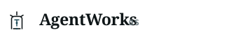
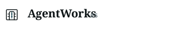

1A. Line Gate
The cleanest successor to Direction 1. Policy boundary, central agent path, small approval nodes. Best candidate for product identity.
recommended / app icon ready
32px header mark
These keep Direction 1, but shift the mark into the current site language: Fraunces wordmark, cool paper, thin engineering linework, mono labels, and restrained color.
The cleanest successor to Direction 1. Policy boundary, central agent path, small approval nodes. Best candidate for product identity.
Most aligned with the existing SG mark. The top signal echoes the lightbulb/turbine gesture without copying it directly.

The most operational version. Stronger control-room and system-of-record signal, with less warmth than the other two.

Advance 1A as the base mark, borrow the top signal from 1B only if we want stronger portfolio continuity.
Produce light, dark, mono, stacked, favicon, GitHub avatar, admin header, and README header variants after choosing between pure Line Gate and Line Gate with the subtle top signal.